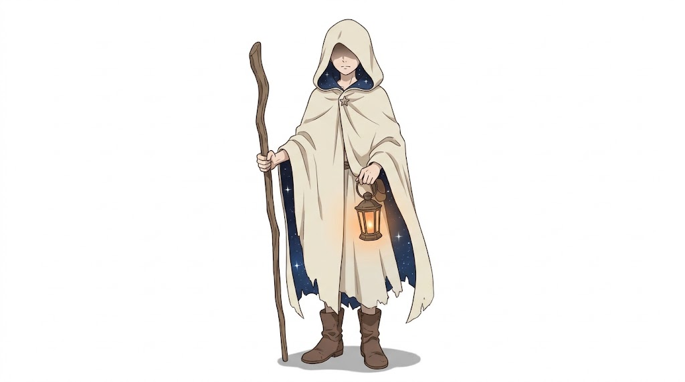

さすらいの旅人
天球から天球へ渡っていく旅人。このゲームの主人公- 顔
- フードを深くかぶり、口元しか見えない。男か女かも決めない
- 服
- 生成り色の大きなフード付きマント。すそが少しすり切れ、内側は星が光る夜空の色。留め具は小さな星の形。茶色の旅のブーツ
- 持ち物
- 長い木の杖と、小さなランタン。ランタンの灯りだけがあたたかいオレンジ色
- 体つき
- ほっそりしている
天球と天球のあいだに広がる、何もない夜の海のような「狭間」。さすらいの旅人は、まだ何色でもない小さな灯りを持って、天球から天球へ渡っていく。これは、旅人の物語のはじまり。
どの天球にも属さない場所。夜空に岩場や道や門が浮かび、遠くに光る天球が見える。
旅人はまだ何も持っていないから、色がない。基本の動きのカードが多く、どの色のデッキにも混ぜられる。
灯守の少年、地図を描く少年、星を数える老学者、白い小狐、白い鳥、苔むした大亀。狭間で出会う人と生き物。
小さな岩場の焚き火。遠くに光る天球。
次へ：ユニットを3体出す古い道しるべと観測台。足元の雲海の下に天球。
次へ：アーツを3回使う光でできた大きな門。夜明けの光があふれる。

さすらいの旅人
天球から天球へ渡っていく旅人。このゲームの主人公1枚ずつ「コピー」してGeminiに貼る。できた絵は、どのカードの絵か言ってチャットで送る。